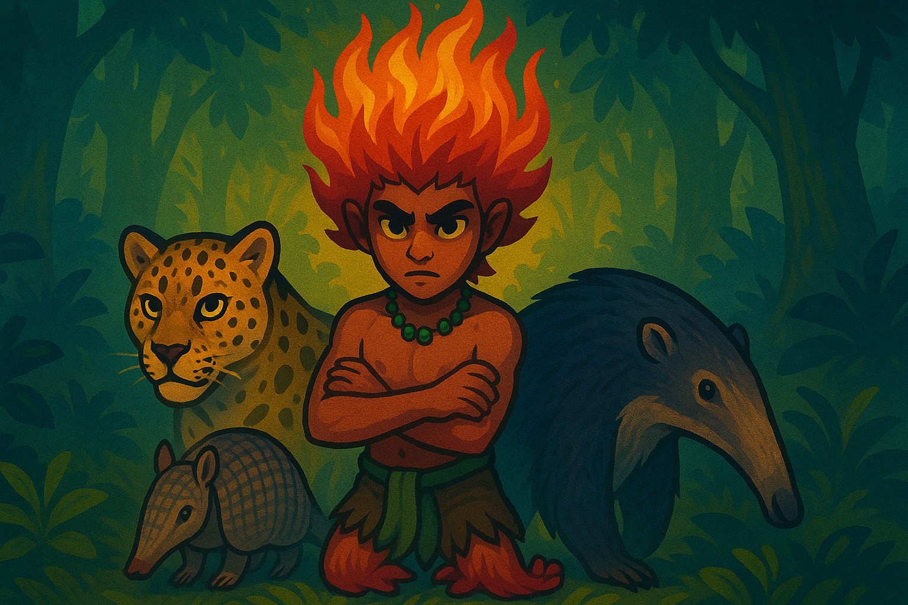

TUPI
FLIX
Lendas que ganham vida
Início
Lendas
Documentários
Sobre
Entrar
NOVO
EXCLUSIVO
SACI-PERERÊ
A lenda do travesso de uma perna só que conquistou o Brasil
Assistir
Mais informações
Lendas em Destaque
A CUCA
Documentários
Ver todos

O Guardião das Florestas
45 min | Documentário
4.8
Obras em Destaque
Atenção:
A chave da API do YouTube não foi configurada. Por favor, edite o arquivo HTML e insira sua chave para carregar os vídeos.
Como obter uma chave?